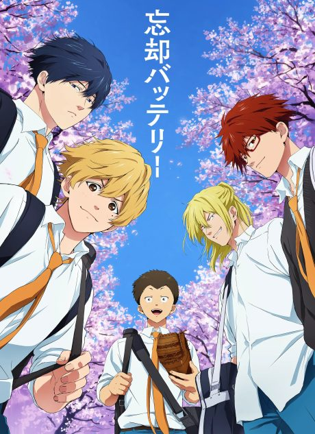
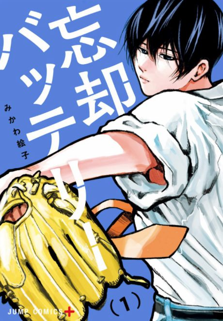

Oblivion Battery
忘却バッテリー (TV)
After the anime, read the manga from Chapter 31.
7.4AniList score
—Animeter, no votes yet
12episodes
Anime finished. Where does the manga pick up?
Start at Chapter31
Season 1 adapts the manga through chapter 30, so start at chapter 31 (volume 5). The manga is ongoing.
130ongoing
Season 1Start reading here